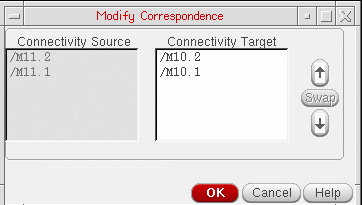

Editing a Target Structure Before Generation
When searching for matching target structures, Layout XL does not consider the relative placement of instances in the source structure as long as swapping these instances does not change the source topology. Additionally, cloning considers the individual bits of an iterated instance to be equivalent because they all have the same master and same connectivity. For these reasons, the relative placement of instances in a target structure can differ significantly from that in the clone source.
The Modify Correspondence form lets you change the relative placement of instances in the target structure manually by changing the correspondence of the individual instances in the source and the target. When you modify the correspondence manually, Layout XL checks that the connectivity of the modified target structure remains valid before allowing you to generate the clone.
To modify the correspondence of source and target instances:
- Create a list of matching target structures using the steps.
-
Select a structure from the list and click Edit.
The Modify Correspondence form is displayed.
The instances in the source structure are listed under Connectivity Source. The list is read-only. The corresponding instances in the target structure are listed under Connectivity Target. When you select an instance in the target structure, the corresponding instance in the source structure is highlighted. - To change the correspondence of a single instance, select the instance in the Connectivity Target list and use the arrow buttons to move it up or down in the list.
- To swap the correspondence of two instances, select the instances and click Swap.
-
When you have finished modifying the correspondence, click OK.
Before accepting the new correspondence, Layout XL checks that the connectivity of the target structure remains valid. - Generate the clones using the steps described in Clone Source Selection and Target Search and Generation.
Related Topics
Clone Source Selection and Target Search and Generation
Return to top